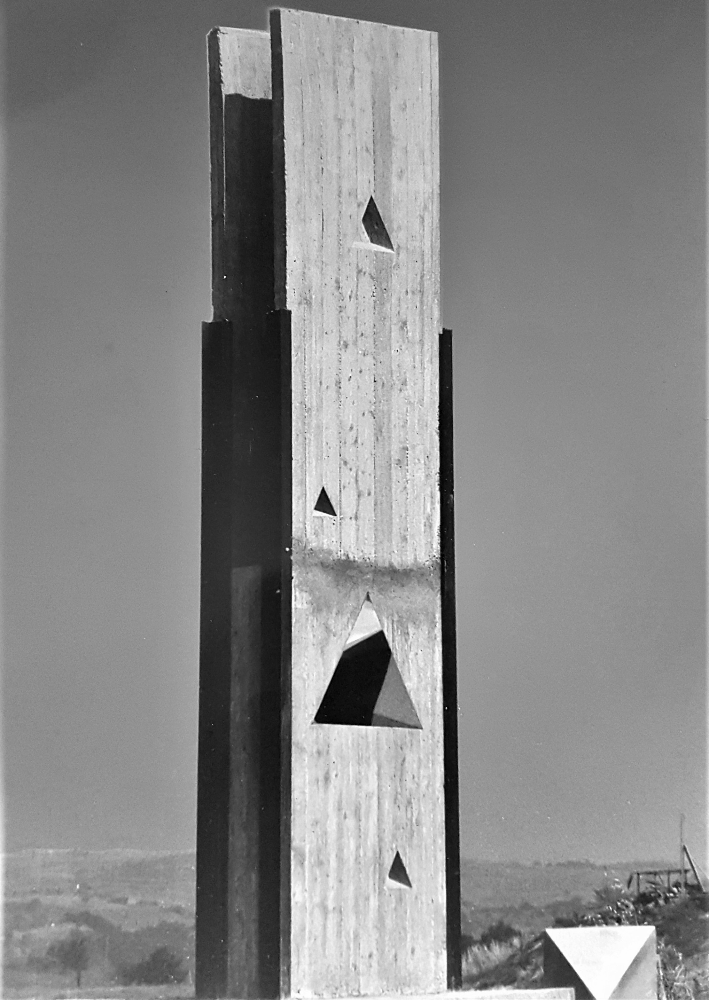

forma e specularità (1963-1973)
Dopo gli esordi sperimentali dei primi due periodi, la scoperta di un materiale levigato e lucente come l’acciaio inox permette a Pierelli di abbandonare il meno seducente alluminio e di dedicarsi alla produzione di opere appartenenti a quella che sarà la sua fase artistica più lunga e produttiva. Poiché l'intento di Pierelli è sempre stato quello di mettere la sua scultura in contatto non soltanto con l’osservatore, ma soprattutto con lo spazio che l’accoglie, la luce e le immagini che vanno riflettendosi continuamente e in modo imprevedibile su di essa sembrano quasi voler creare una sorta di campo magnetico.
Nelle molteplici varianti di Planche Inox la perfezione “formale” delle opere è potenziata dalla luce, che facendo risplendere e vibrare ad ogni cambiamento luminoso la loro superficie, permette ad esse di entrare in contatto con l'ambiente circostante.
 Planche Inox, 1963, acciaio inox, cm 60x38x12, Collezione Pierelli
Planche Inox, 1963, acciaio inox, cm 60x38x12, Collezione Pierelli Planche Inox, 1964, acciaio inox, cm 45x42x14, Collezione Pierelli
Planche Inox, 1964, acciaio inox, cm 45x42x14, Collezione PierelliNella serie Monumento Inox le forme vengono ora complicate da movimenti avvolgenti e da superfici concave o convesse. L’acciaio viene lucidato con una cura quasi maniacale ed entra in competizione con lo spazio circostante che, oltre a venir modificato e ricreato dalla scultura, ne penetra e deforma a sua volta l’identità. Come totemici varchi verso altre dimensioni, i Monumenti Inox innalzati verso il cielo rispecchiano lo spazio, inglobandolo e riflettendone poi un’immagine del tutto inedita. Così come i pittori tentarono nei secoli di andare al di là della superficie bidimensionale della tela, ecco che Pierelli, attraverso le sue strutture d’acciaio, tentava di dar luogo a una dissoluzione della forma nello spazio che riuscisse contemporaneamente a condurre la percezione umana ad un’integrazione dello spazio nella forma stessa. Ed è proprio questa la principale preoccupazione dell’artista, che comincia col perturbare e distruggere lo spazio abituale per abitarne uno trasposto, irreale, surreale.
 Monumento, 1965 circa, acciaio inox, cm 206 x 50 x 51 - base cm 42 x 62 (inv.5415), Roma, Galleria Nazionale d’Arte Moderna
Monumento, 1965 circa, acciaio inox, cm 206 x 50 x 51 - base cm 42 x 62 (inv.5415), Roma, Galleria Nazionale d’Arte Moderna Monumento Inox, 1965, acciaio inox, cm 250x60x40, Roma, Collezione G. Forneris
Monumento Inox, 1965, acciaio inox, cm 250x60x40, Roma, Collezione G. Forneris Monumento Inox, 1965, acciaio inox e piombo, cm 230x80x40Onda, 1966, acciaio inox, cm 250x46x85, Viterbo, Orto Botanico Angelo Rambelli dell’Università degli Studi della Tuscia
Monumento Inox, 1965, acciaio inox e piombo, cm 230x80x40Onda, 1966, acciaio inox, cm 250x46x85, Viterbo, Orto Botanico Angelo Rambelli dell’Università degli Studi della TusciaNata per stare all’aperto e donata dall’artista stesso all’Università degli Studi della Tuscia, Onda cerca di “ricostruire” la forma dell'omonimo elemento tipico della natura servendosi di una tecnica e di un materiale (l’acciaio inox) totalmente artificiali. Tramite quest’opera, Pierelli vuole insegnare all’osservatore una lezione importante: anche dietro le statiche forme geometriche bisogna saper vedere il tremolio organico della natura. Infatti, contrariamente a quanto si potrebbe pensare, la scultura, caratterizzata da una forma pura, monocolore ed essenziale, non stona in mezzo all’ambiente riccamente incontaminato dell’orto botanico, anzi lo risalta, catturando l’attenzione dell’osservatore attraverso un’unione inaspettata, che vede protagonisti le spontanee creazioni della natura con l’altrettanto genuina “creazione” artistica.
Superficie a cuspide rappresenta la prima vera “intuizione” scientifica partorita dal genio artistico di Pierelli. Realizzata nel 1965, l’opera coincide perfettamente con la rappresentazione scultorea della superficie di equilibrio di una delle sette catastrofi elementari, meglio nota con il nome di Catastrofe a cuspide, che verrà poi scoperta ed enunciata dal matematico francese Renè Thom (1923-2002), tra il 1967 e il 1968.
 Superficie a Cuspide (o Piastra Inox), 1965, acciaio inox, cm 110x90
Superficie a Cuspide (o Piastra Inox), 1965, acciaio inox, cm 110x90
Icaro, 1967, acciaio inox, cm 245x58x38Simbolo di quell’ostinata e tipicamente ribelle parte dell’indole umana, che da sempre spinge l’uomo ad oltrepassare i propri limiti, Icaro rappresenta una chiara allusione all’omonimo mito. Così come il protagonista, anche la scultura tenta di spiccare il “volo” trionfando, anche se momentaneamente, sulla materia, ed aprendo un varco luminoso ed infinito attraverso le due ali parallele che la incoronano e che raccolgono la luce nel loro punto di snodo.
Sempre durante il periodo Forma e specularità Pierelli viene a conoscenza della teoria dell’iperspazio, scoperta che lo scultore marchigiano stesso non esitava a definire d’importanza almeno pari a quella della prospettiva per gli artisti del ‘400. Sculture come Tortiglione e Monumento Inox sembrano orientarsi proprio verso questa nuova direzione. Entrambe le opere sono rigorose strutture in acciaio all’interno delle quali la luce agisce non soltanto come elemento stilistico ma soprattutto come elemento formale e formante della loro continuamente nuova configurazione nello spazio.
 Tortiglione, 1967, acciaio inox, cm 250x30x30
Tortiglione, 1967, acciaio inox, cm 250x30x30 Monumento Inox, 1968, acciaio inox, cm 280x80x60
Monumento Inox, 1968, acciaio inox, cm 280x80x60 Monumento Inox, 1968, acciaio inox, cm 250x35x35, Chicago (U.S.A.), Collezione R. Myers
Monumento Inox, 1968, acciaio inox, cm 250x35x35, Chicago (U.S.A.), Collezione R. Myers Cilindri Aperti, 1970, acciaio inox, cm 200x60x40, Roma, Collezione F. Ulpiani
Cilindri Aperti, 1970, acciaio inox, cm 200x60x40, Roma, Collezione F. Ulpiani
Ambientate in uno spazio che permette loro di accogliere, modificare e, soprattutto, amplificare la natura, opere come Cilindri Aperti consentono all’osservatore di assistere alle più strane avventure ottiche, dandogli modo di dirigere, il più delle volte non arbitrariamente, fenomeni di disgregazione e ricomposizione di un mondo alternativo. Vediamo così forme purificarsi o tendere verso una diversa perfezione, opere ricoperte di liriche composizioni astratte o paesaggistiche dare vita a quadri sorprendenti.
«I metalli inox, dal taglio netto, risoluto, esercitano un fascino sconvolgente, come espressioni pure di un mondo astratto, meccanico, provocatorio nella sua stessa semplicità lineare e costruttiva
Caratterizzata da due semicilindri d’acciaio abbinati ed avvolti su un basamento in plexiglas, l’opera Ex Multiplis Unum venne prodotta in ben 60 esemplari. La composizione di tutte e sessanta le strutture andò poi a formare, in occasione della 1ª Biennale del Museo Progressivo d’Arte Contemporanea di Livorno del 1974, una suggestiva spirale.
 Ex Multiplis Unum, 1970, acciaio inox (60 esemplari), cm 30x12x8
Ex Multiplis Unum, 1970, acciaio inox (60 esemplari), cm 30x12x8La luce che colpisce le opere è sempre una, poiché sono gli schermi che la raccolgono ad esser cento: molteplici schermi, molteplici sfaccettature. Attraverso queste sculture, Pierelli vuole dimostrare l’unità nella varietà della forma, una coincidentia oppositorum che ha la capacità di rinnovarsi ad ogni sussulto dello spettatore-attore. Il mistero della luce penetra in queste strutture, allineandosi in verticali o in orizzontali, rientrando o uscendo, rimbalzando o assorbendosi, scontrandosi o scivolando via.
 Monumento Inox, 1966 - 1997, acciaio inox, cm 85x20x20, Facoltà di Medicina e Chirurgia dell’Università degli Studi di Roma Tor Vergata
Monumento Inox, 1966 - 1997, acciaio inox, cm 85x20x20, Facoltà di Medicina e Chirurgia dell’Università degli Studi di Roma Tor VergataIl “Monumento Inox” donato all’Università di Tor Vergata è costituito da due lastre in acciaio inox contrapposte leggermente sfalsate. Ripercorrendole verticalmente, dal basso verso l’alto, ecco che si notano anche delle piegature (sette ciascuna per l’esattezza): le due laterali arrivano sino alla sommità, quella centrale - la più acuta - si ferma a due terzi, le quattro restanti si arrestano invece a un terzo. La parte inferiore di ogni lastra viene così modellata in un semicerchio irregolare, mentre la sommità rimane leggermente deformata verso l’esterno. La ripetizione illimitata e indistinta dell’immagine e della sua percezione riflessa trasforma l’opera in una sorta di modulo linguistico in fase di continua rielaborazione.
In linea con le tendenze artistiche del tempo, quasi tutte le opere concepite da Pierelli vennero realizzate e riprodotte in più esemplari. Queste sculture "seriali" rappresentano, infatti, una probabile risposta a quella richiesta di un’arte sociale quale punto di incontro visivo tra la qualità artistica e la quantità tecnologica che caratterizzò questo periodo.
 Cubo Ottaedro 499 copie
Cubo Ottaedro 499 copie Il vento di Roma 999 copie
Il vento di Roma 999 copieopere
 Omaggio al Quadrato, 1966, acciaio inox, cm 100x80x50, Torino, Museo Civico d'Arte Moderna
Omaggio al Quadrato, 1966, acciaio inox, cm 100x80x50, Torino, Museo Civico d'Arte Moderna Undulating Sheet, 1964, acciaio inox, cm 252.1x108.7x40.1, Washington (U.S.A.), The Hirshhorn Museum and Sculpture Garden
Undulating Sheet, 1964, acciaio inox, cm 252.1x108.7x40.1, Washington (U.S.A.), The Hirshhorn Museum and Sculpture Garden Stainless Steel Monument, 1966, acciaio inox, cm 202.25x50.17x50.17, Pittsburgh (U.S.A.), Carnegie Museums of Art
Stainless Steel Monument, 1966, acciaio inox, cm 202.25x50.17x50.17, Pittsburgh (U.S.A.), Carnegie Museums of Art Acciaio Inossidabile n. 3, 1963-1965, acciaio inox, cm 100,5x100x17, Roma, Galleria Nazionale d’Arte Moderna
Acciaio Inossidabile n. 3, 1963-1965, acciaio inox, cm 100,5x100x17, Roma, Galleria Nazionale d’Arte Moderna Grandissima, 1966, acciaio inox, cm 300x150x150, Atlanta (U.S.A), Spellman college
Grandissima, 1966, acciaio inox, cm 300x150x150, Atlanta (U.S.A), Spellman college Superficie a cuspide (o Piastra Inox), Facoltà di Medicina e Chirurgia dell’Università degli Studi di Roma Tor Vergata
Superficie a cuspide (o Piastra Inox), Facoltà di Medicina e Chirurgia dell’Università degli Studi di Roma Tor Vergata La scultura Icaro all’interno del cortile della Facoltà di Economia dell’Università degli Studi di Roma Tor Vergata
La scultura Icaro all’interno del cortile della Facoltà di Economia dell’Università degli Studi di Roma Tor Vergata Cilindri Aperti, 1969, acciaio inox (tre esemplari), cm 200x80x60
Cilindri Aperti, 1969, acciaio inox (tre esemplari), cm 200x80x60 I sessanta esemplari dell’opera Ex Multiplis Unum (1970) di Attilio Pierelli vennero sistemati in modo da formare una suggestiva spirale in occasione della 1ª Biennale del Museo Progressivo d’Arte Contemporanea di Livorno, tenutasi dal dicembre del 1974 all’aprile dell’anno immediatamente successivo
I sessanta esemplari dell’opera Ex Multiplis Unum (1970) di Attilio Pierelli vennero sistemati in modo da formare una suggestiva spirale in occasione della 1ª Biennale del Museo Progressivo d’Arte Contemporanea di Livorno, tenutasi dal dicembre del 1974 all’aprile dell’anno immediatamente successivo Donna, 1968, acciaio inox, cm 267x60x50
Donna, 1968, acciaio inox, cm 267x60x50 Donna, 1968, acciaio inox, cm 267x60x50
Donna, 1968, acciaio inox, cm 267x60x50 Monumento Inox, 1971, acciaio inox, cm 85x20x20
Monumento Inox, 1971, acciaio inox, cm 85x20x20 Monumento Inox, 1971, acciaio inox, cm 65x20x20
Monumento Inox, 1971, acciaio inox, cm 65x20x20 Quadrifoglio, 1967 - 1972, acciaio inox, cm 300x280x220
Quadrifoglio, 1967 - 1972, acciaio inox, cm 300x280x220 Quadrifoglio, 1967 - 1972, acciaio inox, cm 300x280x220
Quadrifoglio, 1967 - 1972, acciaio inox, cm 300x280x220 Monumento Inox, 1966 - 1997, acciaio inox, cm 85x20x20, Facoltà di Medicina e Chirurgia dell’Università degli Studi di Roma Tor Vergata
Monumento Inox, 1966 - 1997, acciaio inox, cm 85x20x20, Facoltà di Medicina e Chirurgia dell’Università degli Studi di Roma Tor Vergata Farfalle, 1966, acciaio inox (50 esemplari), cm 25x25x25
Farfalle, 1966, acciaio inox (50 esemplari), cm 25x25x25 Farfalle, 1966, acciaio inox (50 esemplari), cm 25x25x25
Farfalle, 1966, acciaio inox (50 esemplari), cm 25x25x25 Saturno 4 e Cilindri Aperti (1969 - 1970)
Saturno 4 e Cilindri Aperti (1969 - 1970) Echo, 1970, acciaio inox, cm 196, Livorno, Museo Civico Giovanni Fattori
Echo, 1970, acciaio inox, cm 196, Livorno, Museo Civico Giovanni Fattori Monumento Inox, 1971, acciaio inox, cm 67x20x18, Collezione Pierelli
Monumento Inox, 1971, acciaio inox, cm 67x20x18, Collezione Pierelli Angeli, 1968 - 1991, acciaio inox, cm 300x100x100, Facoltà di Ingegneria dell’Università degli Studi di Roma Tor Vergat
Angeli, 1968 - 1991, acciaio inox, cm 300x100x100, Facoltà di Ingegneria dell’Università degli Studi di Roma Tor Vergat